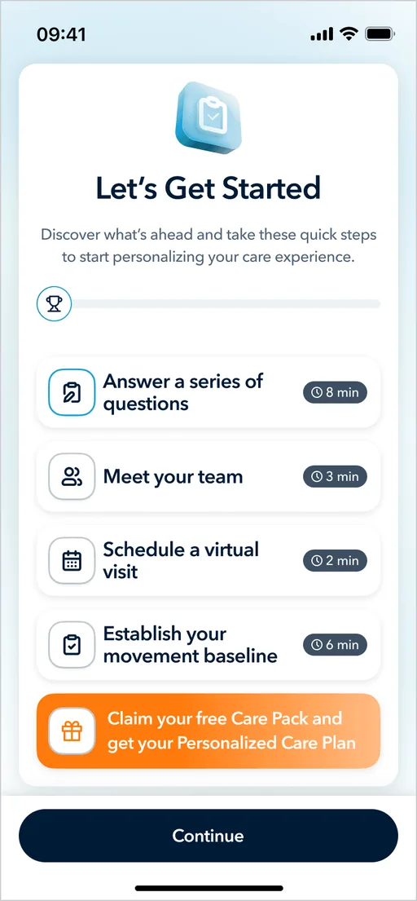
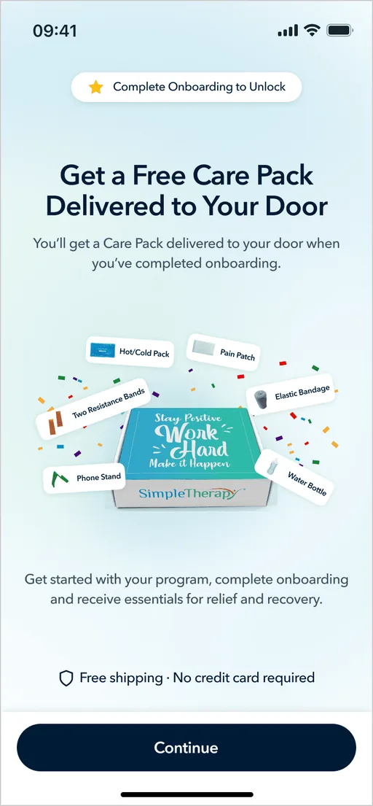
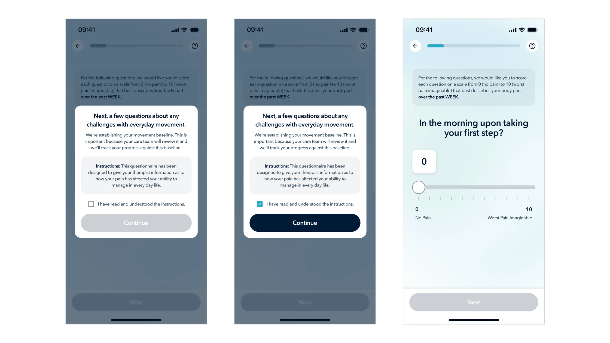
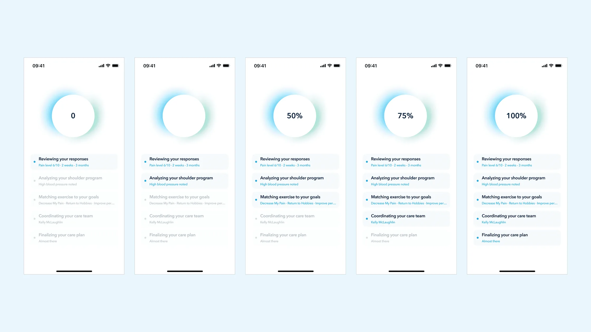
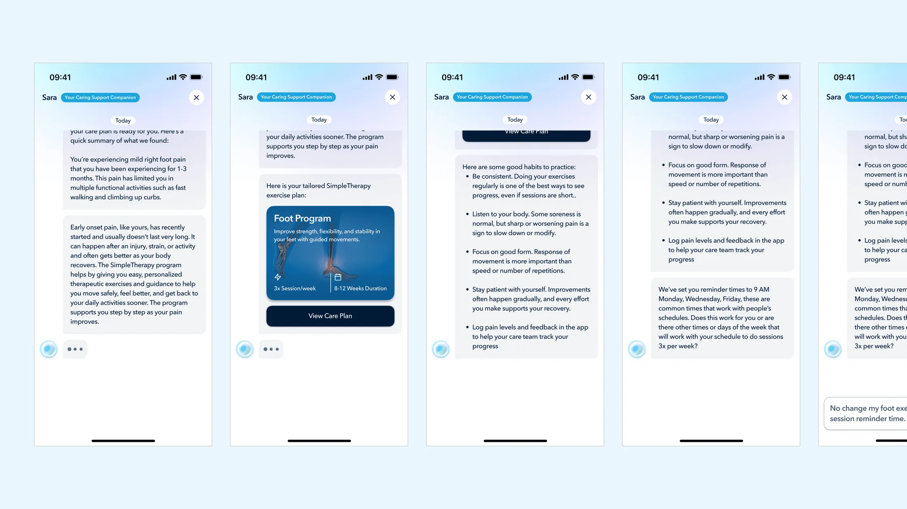
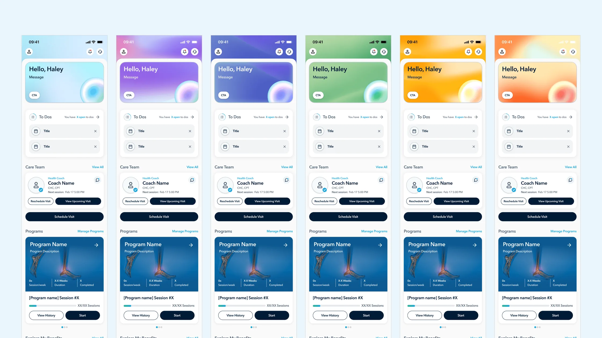
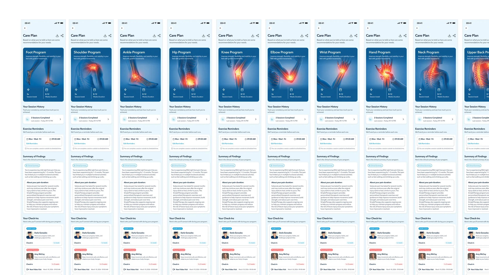
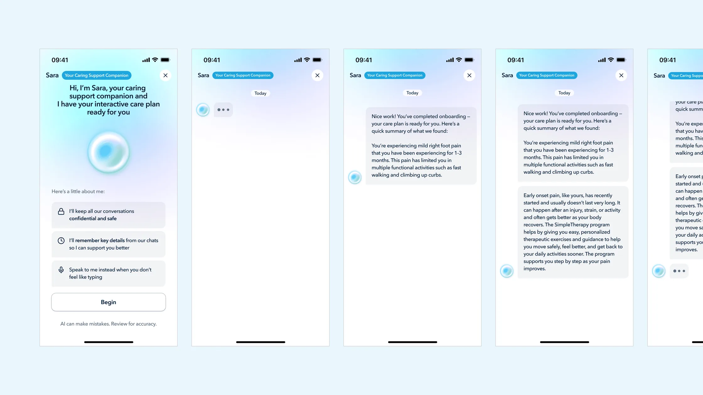

Redesigning the member onboarding for SimpleTherapy.
Designing for clinical trust at the moment a member meets their care plan, a sole-designer redesign of the mobile and web onboarding experience for a virtual musculoskeletal health platform.
My Role
Primary Product Designer
Scope
Research, Interaction, Visual System
Status
Live
Platform
iOS · Android · Web
At a glance
Client
SimpleTherapy, a virtual musculoskeletal and behavioral health platform serving employers and health plans.
Surface
Member-facing iOS app and responsive web experience. Onboarding was the hero workstream covered in this case study.
My Role
Sole product designer (mobile + web). End-to-end ownership of research synthesis, interaction design, visual design, and prototyping.
Constraint
Every flow had to align with the clinical team's care protocol. Every question on every screen exists because a clinician needs the answer to safely treat the member.
Team
Product owner, clinical team (PTs and clinical operations), engineering, brand and content stakeholders.
Context
Why onboarding mattered more than it usually does.
SimpleTherapy operates in a category, digital MSK, where the painful industry-wide truth is that real engagement hovers around 1-3%. Members download the app, drop off, and never come back. The platforms that solve this aren't the ones with the prettiest dashboards. They're the ones that earn enough trust during onboarding to convert a curious sign-up into a member who actually shows up for their care.
So when the client came to me with the brief, the headline problems read like a typical onboarding redesign: members dropping off mid-funnel, long lists of clinical questions overwhelming users on a single screen, weak hierarchy and visual system, broken adjacent flows.
But once I started talking to the clinical team and digging into the data the product owner shared, the real story underneath surfaced. The biggest problem wasn't drop-off. Drop-off was a symptom. The real problem was trust, specifically, members didn't believe that the care plan they received at the end of onboarding was actually built for them. It felt generic. It felt algorithmic. And once a member doesn't trust the plan, no amount of beautiful UI will get them to engage with it.
That reframe, from "fix the onboarding funnel" to "design for the moment a member first meets their care", became the spine of the project.
The constraint
The three-way tension I designed inside.
Most onboarding work is a two-way conversation between the user and the product. This one was three-way. Every design decision in this case study lives inside this triangle, and the interesting parts of the work were the moments where these three needs pulled in different directions.
The Member
Wanted speed, clarity, and a sense that this was built for them, not a generic intake form.
The Clinical Team
Needed specific data, in a specific structure, with consent. Needed members to actually read instructions before standardized assessments; if members rushed, the data was noise.
The Business
Needed members to complete onboarding so they could be matched to a program, scheduled with a clinician, and become real engaged users, not enrollment statistics.
Problem one
Designing for completion: turning the destination into a reward.
The tension
Members were dropping out partway through onboarding. The previous flow opened with no preview, members started answering questions without knowing how many there were, how long it would take, or what they got at the end. From a behavioral standpoint, this is exactly the setup that produces drop-off: high effort, ambiguous payoff, no momentum cues.
The clinical team's concern with adding any "reward" framing was that it shouldn't trivialize the medical seriousness of what was happening. The product team's concern was the opposite: members needed a reason to keep going.
My decision
I designed two upfront screens that reframed onboarding from "a task to get through" into "a sequence of clear steps leading to something tangible."
The first screen, "Let's Get Started", gives the member a roadmap. Four labeled steps, each with an estimated time: Answer a series of questions (8 min), Meet your team (3 min), Schedule a virtual visit (2 min), Establish your movement baseline (6 min). Below those four steps sits a fifth row, visually distinct in warm orange: "Claim your free Care Pack and get your Personalized Care Plan." It's the reward at the end of the path, but it's earned, not promised.
The second screen makes the reward concrete: a photograph of an actual SimpleTherapy Care Pack, resistance bands, hot/cold pack, pain patch, elastic bandage, water bottle, phone stand, with a "Complete Onboarding to Unlock" badge.
Why this works
It establishes a contract. The member knows exactly what they're agreeing to and what they'll get. The total time commitment is visible. The destination is concrete.
It uses a tangible reward without trivializing the clinical content. The Care Pack isn't a gamification badge or a cute mascot, it's real physical equipment that supports their actual recovery. The reward is functional, not decorative. That was the line I needed to walk with the clinical team.
It primes "personalization" before the survey even starts. The orange row mentions a Personalized Care Plan, planting the seed that the questions about to be asked are not arbitrary; they're the inputs to something built specifically for this person.
I paired these openers with step-completion celebrations at major milestones (after Section 1, Section 2, Section 3). Each one is a micro-payoff that reinforces "you are making progress and the destination is real."


Problem two
Progressive disclosure with intentional friction.
The tension
The old survey screens showed long lists of clinical assessment questions on a single screen. Members were overwhelmed and were either skimming or rushing through. The clinical team specifically called this out: they couldn't trust the data they were collecting because they couldn't tell whether members had actually engaged with the questions.
The obvious answer is one-question-per-screen with a progress bar. That solves cognitive overload. But it created two new problems pulling in opposite directions:
Problem A. The clinical team needed members to actually read the instructions before standardized assessment sections. These are validated instruments, the kind used to track functional progress and surface clinical red flags. If a member doesn't understand "rate each item on a 0-10 scale based on the past week," the resulting data is worse than no data. The clinical team wanted real, deliberate attention paid to the instructions.
Problem B. The stakeholders were worried that a heavy "Instructions" section would feel like a different product. Members had just completed a friendly, encouraging onboarding flow. Suddenly hitting a stiff medical questionnaire interface would break the sense of momentum and signal "this is the boring part."
My decision
I designed a transitional modal that sits between the conversational sections of onboarding and the standardized assessment sections.
Visually, the modal preserves continuity. The background is the same survey screen the member was just on, slightly dimmed and pushed back. The progress bar at the top is still visible, confirming the member is still inside onboarding, not in a new product. The modal that rises in front carries the same typography, the same component language, the same overall warmth.
Content-wise, the modal does deliberate work: a natural-language framing sentence, a "why this matters" sentence, a boxed Instructions block, a confirmation checkbox ("I have read and understood the instructions"), and a Continue button that's disabled until the checkbox is checked.
Why this works
I'm proud of this one because it's the kind of design move that looks small but resolves an ugly stakeholder conflict.
For the clinical team: the checkbox is a genuine attention gate. Members can't skip past it. The instructions are presented as their own visually-emphasized block.
For the stakeholders: the modal lives inside the onboarding experience visually, same progress bar, same component system, same warmth. There's no jarring transition. The friction is local to this moment, not a section-break.
For the member: they get a moment of orientation before what would otherwise feel like a sudden change of pace. The friction is intentional and explained, which is very different from friction that feels like a bug.

Problem three · The hero problem
Designing the moment of trust.
This is the section the entire project comes down to.
The tension
The stakeholders' single most concrete piece of feedback from members was: "the care plan feels generic, it doesn't feel like it was made for me."
In the previous flow, members answered the final question and were immediately dropped onto a Care Plan screen, a static layout showing their program, exercises, and schedule. The screen was perfectly accurate. It was a personalized plan. But the moment of receiving it gave members no reason to believe that. From their perspective, they answered a bunch of questions and a screen appeared. Could've been the same screen anyone gets.
The product owner had already begun integrating an AI assistant named Sara, a conversational companion meant to keep members engaged with their day-to-day care. She was being built for the post-onboarding experience. My instinct was that Sara had a much bigger role to play, much earlier.
My decision
Part 1, the generation sequence. Instead of jumping from the final question to the care plan, members now see a sequence of screens showing the system reasoning through their inputs in real time. A progress circle counts from 0% to 100%, and beneath it a list of five steps lights up one by one, each populated with the member's own data: Reviewing your responses (Pain level 6/10 · 2 weeks · 3 months); Analyzing your shoulder program (High blood pressure noted); Matching exercise to your goals (Decrease My Pain · Return to Hobbies · Improve performance); Coordinating your care team (Kelly McLaughlin); Finalizing your care plan (Almost there).
Part 2, the Sara conversational handoff. Instead of dropping the member onto a static Care Plan screen, the flow now opens into a chat with Sara. She summarizes what was found in plain language, introduces the recommended program with clear structure (Foot Program, 3x sessions per week, 6-12 weeks duration), and then transitions into a logistics conversation: reminder times, schedule preferences, communication frequency.
The member isn't receiving a plan. They're being introduced to it, by a companion who'll be with them throughout their journey.
Why this works
This is the design move that I think differentiates the SimpleTherapy onboarding from almost every competitor's. Three things are happening:
Trust is built through visible reasoning, not through claims. The previous design told members "this is personalized." The new design shows personalization by reflecting their own data back at them, pain level, duration, goals, comorbidity, named clinician, in a sequence the member can watch unfold. Trust isn't a sentence the product says about itself; it's a feeling the member arrives at by watching the product do its work.
The handoff to Sara reframes the care plan from a verdict into a relationship. A Care Plan screen is a one-way transaction: here's what we decided for you. A conversation with Sara is two-way: here's what we found, here's what's recommended, and now let's negotiate how this fits your life. That single shift changes the member's relationship to their own care from passive to participatory.
Sara isn't a new feature here, she's a reused asset given a much more important job.
Systems thinking
This is a piece of design thinking I want to call out specifically: I didn't invent Sara. The product owner had already commissioned her for post-onboarding engagement. But by promoting her to the voice that introduces the care plan, the same asset now does three jobs instead of one: she introduces the plan, builds the member's relationship with her for the long run, and creates a consistent companion presence that lives across the entire member journey. This is the cheaper, smarter design move, finding the latent capability in an existing system rather than building a new one. (Sara is still evolving, that's a deeper case study for another time.)


Problem four
Building a scalable visual system from scratch.
The tension
The previous app had been built feature-by-feature over several years. There was no shared visual system. Component styles were inconsistent. Hierarchy was weak. Branding was minimal, the app felt like a clinical tool, not a product members would identify with. The client explicitly asked for a redesign that would feel modern and scale across SimpleMSK, Simple Behavioral, Simple Wellbeing, and any future products.
The constraint that mattered here was that the visual system needed to express the brand's actual character, warm, direct, grounded; modern but clinically credible, without falling into the two traps that dominate healthcare design: sterile corporate blue, or wellness-app pastel softness. Both signal "I don't take care seriously."
My decision
I built the visual system around a small number of intentional choices:
A primary brand color of deep navy (#001B36) instead of healthcare blue. Navy reads as clinically credible without being cold. It anchors the system. Sky blue (#1EA5DE) serves as the accent for primary CTAs and links, a single confident pop, not a wash.
A typography system that treats clinical content with the same care as marketing content. Avenir Next throughout, with strict hierarchy. The discipline is in consistency, applying the system across every survey screen, every modal, every dashboard variant.
Subtle gradients to carry mood across product states. Members don't all arrive in the same emotional condition. Someone who just completed a week of sessions and someone who missed three in a row need to be greeted differently. I designed six dashboard variants that share the same structural layout but differ in their hero-card gradient, calm blue for default, warm orange for a missed-session state, green for a streak, lavender for a returning member. Same components, different emotional register.
Sara as a visual-system citizen, not a one-off. I worked Sara into the design system as a set of orb states, default, animating/thinking, listening, error, thumbs-up/thumbs-down feedback, each with its own visual treatment. Her chat bubbles use a dedicated lilac that's distinct from any other surface in the product, so members instantly recognize when Sara is talking. I also broke Sara's behavior into modes based on task severity, a casual reminder uses one orb state and one tone of voice; a clinical red-flag escalation uses another. This was the start of treating Sara as a system, not a chatbot.
Why this works
A visual system is the boring backbone behind every screen you've seen in this case study. The Let's Get Started preview, the survey modals, the care plan generation sequence, the Sara conversational handoff, all of them only work because they share a common visual language. Without the system, each screen would be a one-off. With it, the entire flow reads as a single product.
I documented the system as a Design Index, a developer-facing reference cataloging every component, every state, every token, with the rationale baked in. This is the artifact I'm proudest of from the systems side of the project, because it's what makes the design durable after I hand it off.



Validation
How I validated the work, honestly.
I want to be honest about what validation looked like, because I think this matters more than fabricating numbers.
Maze Testing Rounds
Multiple rounds of qualitative testing through Maze. Surfaced copy inconsistencies, loop issues in post-scheduling flows, video playback edge cases, and unclear instruction copy. Every round fed directly into the next iteration.
Clinical Sign-off
No section shipped without explicit review from the clinical team. They were gatekeepers on consent language, instruction phrasing for standardized assessments, care plan framing, and red-flag escalation pathways.
Stakeholder Iteration
Detailed QA logs tracking dozens of rounds of stakeholder feedback on every change. Normal product work, mentioned because it's evidence of the operational care that went into landing the design.
Production Deployment
The redesigned onboarding shipped. Members are going through it today. In a world where many designs never make it past internal review, this is the outcome that matters most.
What I'd measure with post-launch access
The metrics I'd track.
If I were running this as a senior-level engagement with full data access, these are the metrics I'd track:
01
Funnel completion rate, by section
Hypothesis: the biggest improvement should show up at the care plan reveal, where trust was previously breaking down.
02
Time-to-first-session-completed (7-day window)
The leading indicator of real engagement, far better than enrollment or app opens.
03
Self-reported trust score on the care plan
Captured immediately after the Sara handoff. A single Likert question would do.
04
Care plan modification rate
How often members ask Sara to adjust their plan after the handoff. If the design is working, this should be higher, not lower. A member who tweaks their plan is a member who feels ownership of it.
05
30-day adherence rate vs. legacy flow
The true outcome metric for any onboarding redesign in a clinical product.
Outcome
Early signals of a product people actually use.
Full quantitative data is still being collected post-launch. However, early client feedback and development team observations confirm meaningful improvements in the metrics that matter most for a health platform, retention, session initiation, and onboarding completion.
“The improved UX has meaningfully reduced user drop-off at points where we were previously losing people. The new flows feel intuitive in a way the old app never did.”
Client, US-Based Mental & Physical Health Platform
You’ve made it to the end of quite the scroll.. Great job!